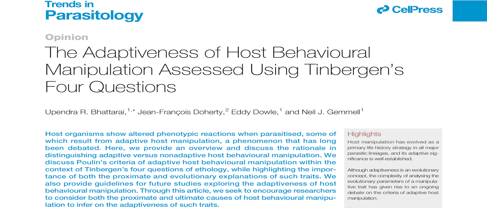

Genomics
De novo genome assembly, annotation, and comparative genomics to build high-quality references and investigate genome architecture.

Transcriptomics
Bulk and single-cell RNA-seq analysis for differential expression, alternative splicing, and cell-state inference.

Epigenomics
DNA methylation and chromatin profiling (e.g., WGBS, ChIP/CUT&RUN) to decode regulatory programs.

Host–Parasite
Integrative analyses to understand molecular mechanisms of host behavior manipulation and interaction dynamics.
Selected Outputs
5+
Reference genomes
10+
RNA/epi datasets
17
Publications
Open
Reproducible workflows